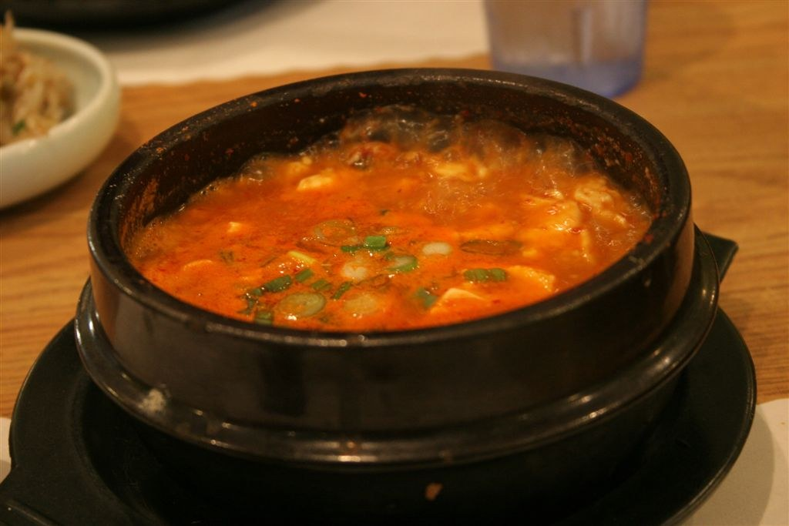

타이베이 시먼딩 한식당 추천 4곳, 한국 맛이 그리울 땐 어디로?
포차, 순두부, 부대찌개, 삼겹살 — 메뉴도 분위기도 다른 네 곳을 위치와 추천 근거까지 함께 골랐습니다.
게시
"대만 음식이 입에 잘 안 맞는데, 시먼딩 근처에 한식당 있을까요?" 여행 카페에 꾸준히 올라오는 질문이에요. 시먼딩 한식당은 골목 1층 가게부터 쇼핑몰·건물 4층까지 흩어져 있어서, 이름과 주소를 알고 가는 편이 찾기 쉽습니다. 네이버 카페 '즐거운 대만여행'의 방문 후기와 질문 글 댓글에서 추천된 4곳을 구글맵 정보(2026년 10월 17일 확인)와 함께 정리해봤어요.
01 · 시먼딩 한식당 4곳 한눈에 비교하기
| 항목 | 은하동 | 북촌순두부 | 동대문 | 금하동 |
|---|---|---|---|---|
| 종류 | 한식 포차 | 순두부·덮밥 | 부대찌개·닭도리탕 | 삼겹살 구이 |
| 위치 | 龍昌街 7號 | 桂林路 1號 4층 | 昆明街 92-1號 4층 | 成都路 100之1號 1층 |
| 구글맵 평점 | ★4.8 (1,153) | ★4.5 (1,844) | ★4.5 (934) | ★4.9 (6,012) |
| 영업시간(구글맵) | 새벽 2시까지 | 11:00 오픈 | 11:30 오픈 | 새벽 2시까지 |
| 카페 추천 근거 | 방문 후기 + 댓글 | 방문 후기 | 질문 글 댓글 | 질문 글 댓글 |
평점·리뷰 수·영업시간은 2026년 10월 17일(토) 밤 구글맵 표시 기준이에요. 요일마다 시간이 다를 수 있으니 가기 전에 구글맵에서 다시 확인하세요. 동대문과 금하동은 직접 방문 후기가 아니라 "시먼딩 쪽에 한식집 있을까요?" 같은 질문 글에 달린 추천 댓글이 근거입니다.
02 · 은하동 — 새벽 2시까지 여는 시먼딩 한식 포차
은하동(銀河洞)은 룽창제(龍昌街) 7호에 있는 한식 포차예요. 2024년 2월 카페 방문 후기에서는 한국인 사장님이 있어서 중국어를 못 해도 주문이 어렵지 않고, 맛도 한국과 같다는 평이 나왔습니다. 2026년 5월 질문 글에도 "시먼딩 야시장 쪽 은하동에서 지금 먹고 있는데 괜찮다"는 댓글이 달렸어요.
늦은 저녁 구글맵 기준 새벽 2시까지 영업해요. 시먼딩 구경을 마치고 늦게 들르기 좋은 편입니다.
예산 구글맵 가격대 표시는 1인 NT$600~800이에요(2026년 10월 기준).
예약 구글맵에서 inline 온라인 예약을 지원해요. 전화는 02-2381-5281입니다.
메뉴 후기에 구체적인 메뉴 이름은 나오지 않아요. 현장 메뉴판에서 확인하세요.
"완전 진짜 똑같은 한국맛에 한국인 사장님이 있어서 중국어 의사소통 필요 없어요." — 네이버 카페 즐거운 대만여행 방문 후기(2024년 2월)를 다듬어 옮겼습니다
03 · 북촌순두부 — 꾸이린루 쇼핑몰 4층 순두부
북촌순두부(北村豆腐家)는 꾸이린루(桂林路) 1호, 예전 까르푸 꾸이린점 건물 4층에 있어요. 2025년 1월 카페 후기에서는 순두부 밥 세트, 불고기 철판덮밥, 오징어볶음을 시켰고, 칼칼하고 간이 적당했다는 평입니다. 3명이 NT$1,221을 냈는데 아깝지 않았다고 해요(2025년 1월 후기 기준).
지점 이름 확인 구글맵 지점명이 'Guilin Prosperity Plaza Branch(桂林萬家福店)'로 바뀌어 있어요. 검색할 때 참고하세요.
오징어볶음은 밥 따로 후기 기준 오징어볶음은 밥을 따로 시켜야 했어요.
식후 아이스크림 후기 작성 당시(2025년 1월)에는 무료 아이스크림이 있었어요. 지금도 있는지는 현장에서 확인하세요.
여는 시간 구글맵 기준 11:00에 열어요. 마감 시간은 구글맵에서 확인하세요. 전화 02-2371-5866.

04 · 동대문 — 쿤밍제 4층 부대찌개·닭도리탕
東大門韓國特色料理 西門店(동대문)은 쿤밍제(昆明街) 92-1호 4층, 西門客棧 건물에 있어요. 부대찌개·닭도리탕·불고기·고기구이를 내는 곳입니다. 2023년 12월 카페 질문 글에 "한국분이 하시는 식당이고 맛있다"는 추천 댓글이 달렸어요. 직접 방문 후기는 찾지 못해서 메뉴 구성과 가격은 구글맵이나 현장에서 확인하는 편이 안전해요. 구글맵 기준 11:30에 열고, 전화는 02-2331-5582입니다.
05 · 금하동 — 초벌 삼겹살에 전골까지
금하동(金河洞)은 청두루(成都路) 100之1호 1층의 삼겹살 전문점이에요. 리뷰 6,012개에 ★4.9로 네 곳 중 리뷰가 가장 많습니다. 2026년 3월 카페 질문 글에는 "삼겹살집인데 초벌해서 나오고, 나중에 전골까지 먹으면 최고"라는 추천 댓글이 있었어요. 댓글 작성자는 예약하고 갔다고 하니 저녁 시간이면 예약을 고려해볼 만합니다. 구글맵 기준 새벽 2시까지 영업해요.

시먼 쪽에 묵을지 고민 중이라면 타이베이 숙소 위치 비교, 근처 완화 쪽 저녁 동선은 용산사 야경 가이드도 함께 보세요. 다른 동네 한식당은 대만 한식 맛집, 시먼딩 주변 맛집은 타이베이 맛집 지도에서 볼 수 있어요.
지도에서 타이베이 한식 맛집도 확인해보세요
시먼딩 밖 한식당까지 지도에서 한 번에 찾아보세요.